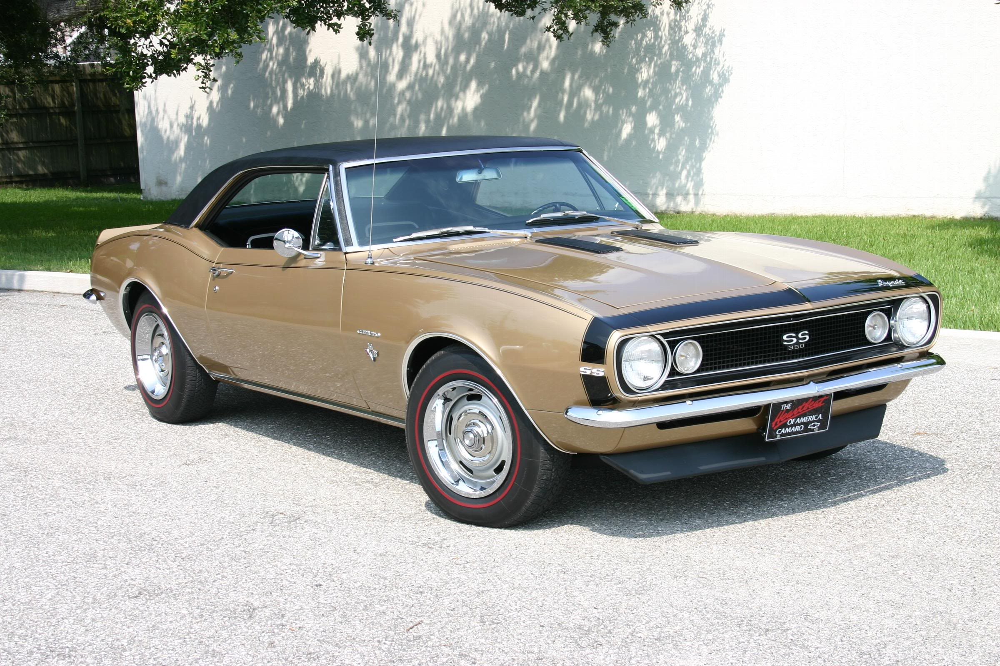
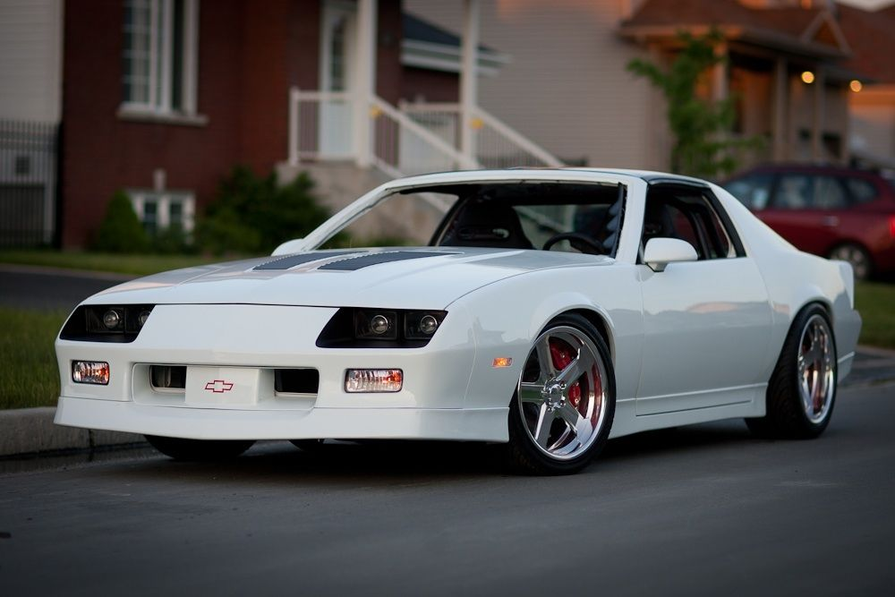
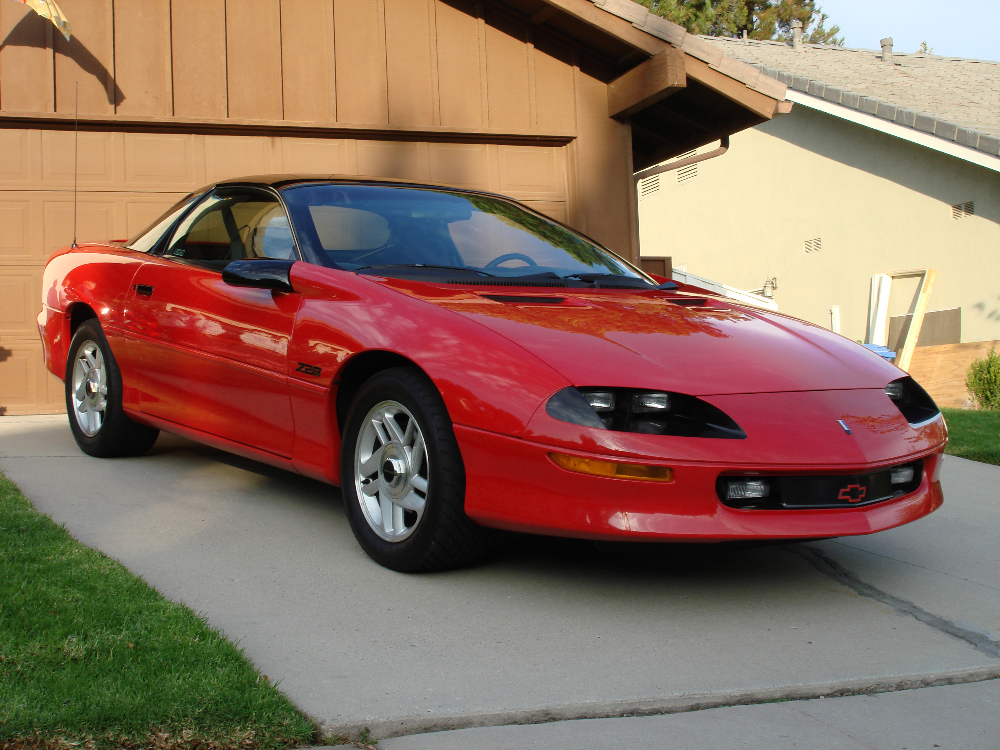
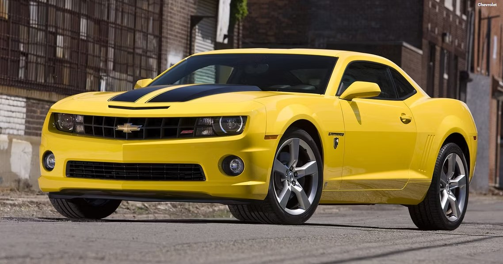
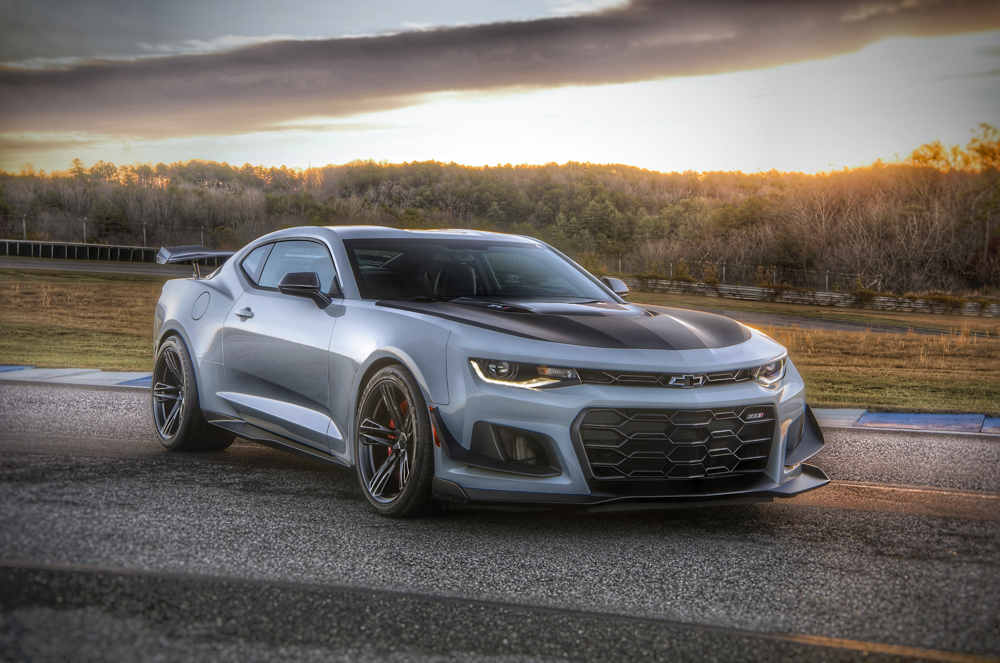

Gen 1 (1967-1969)
The debut generation of the Camaro introduced in 1967 as a response to the Ford Mustang. It offered a range of engines, including inline-six and V8 options, and featured iconic styling cues like the coke-bottle shape and a long hood-short deck design. It was available in coupe and convertible body styles.
Gen 2 (1970-1981)

This generation saw a significant redesign in 1970, with a more muscular and aggressive appearance. It featured larger dimensions, offering a wider range of engine options, including big-block V8s. The 1970-1973 models are particularly sought after by collectors for their iconic styling.
Gen 3 (1982-1992)
The Camaro underwent a major overhaul for its third generation. It was built on a new F-body platform, which made it lighter and more aerodynamic. Engine options included fuel-injected V6 and V8 engines. The IROC-Z model, introduced in 1985, gained popularity for its performance enhancements.
Gen 4 (1993-2002)
Introduced in 1993, this generation featured sleeker styling and improved handling. It offered more powerful engine options, including the legendary LT1 V8. The fourth generation also introduced the Camaro SS model, which boasted higher performance capabilities.
Gen 5 (2010-2015)
After a hiatus, the Camaro returned in 2010 with a retro-inspired design reminiscent of the first generation. It featured modern amenities and performance enhancements, including powerful V6 and V8 engines. The fifth generation also saw the reintroduction of the convertible body style.
Gen 6 (2016-2024)
The current generation of the Camaro continues the tradition of blending performance with modern design. It offers a range of engine options, including turbocharged four-cylinders and high-performance V8s. The sixth generation features advanced technology and improved handling dynamics.